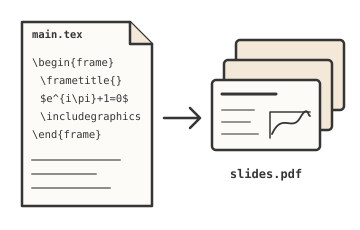
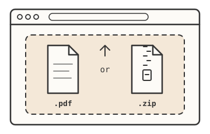
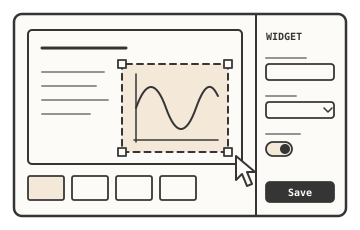
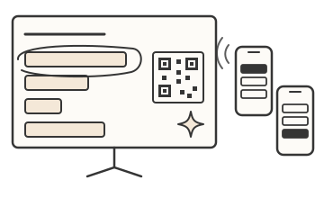

As someone who teaches and presents technical topics often, I found myself limited by the static nature of traditional LaTeX slides. I wanted a way to create a more dynamic experience that would allow me to seamlessly integrate videos, audio, and interactive widgets, while maintaining the beautiful typesetting of LaTeX. That's why I created Beamer+.
What Is Beamer+?
Beamer+ is a lightweight web-based presentation app built with Python and Flask that enhances LaTex slides with the following features:
Embedded Media Support
Seamlessly insert videos, 3D models, and audio directly into your slides.
Split Screen
Show your slides side by side with a live widget, website, or video, without ever leaving the presentation.
Annotation Tools
Draw, highlight, and mark up content during your presentation.
Custom Widgets
Add custom interactive widgets to enhance presentations even further.
With Beamer+, you can turn a static PDF into a more engaging and interactive lecture or demo, perfect for classrooms, conferences, or online content creation.
See Beamer+ in action with embedded media and annotations
How It Works
Using Beamer+ is simple.

Write your slides as usual
Build your deck in Beamer, or any tool that exports a PDF, and compile it. Your typesetting, equations, and theme come through exactly as you designed them.

Load it into Beamer+
Upload a plain PDF and each page becomes a slide. Or upload a pre-made presentation ZIP, which includes the plain PDF bundled with its saved configuration, media, annotations, and widgets.

Add interactivity
In the editor, place videos, audio, 3D models, or widgets onto any region of a slide. Each widget describes its own settings, so Beamer+ builds its configuration panel automatically.
Beamer+ comes with a host of built-in widgets. You can also create custom widgets as a single self-contained HTML file.

Present live
Present straight from Beamer+ without switching between windows. Your slides, videos, widgets, and annotations all live in one place, so you can stay focused on your audience instead of juggling apps.
When you're done, save the whole presentation as a ZIP so you can reopen or share it later.
Getting Started
There are two ways to start using Beamer+:
Try the Live Demo
The quickest way to see Beamer+ in action. Visit beamer.changapp.net in your browser. There's nothing to install.
Run Your Own Server
Download the latest source code from the GitHub repository and follow the setup instructions to start your own Beamer+ server.
Try Beamer+
Ready to enhance your presentations?
Try the live demo to see Beamer+ in action, or check out the open-source project on GitHub to run it yourself.
Got a feature in mind? I'd love to hear it. Reach out anytime!